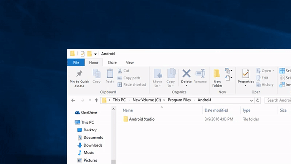

Dumping the data.arc
Requirements
- One of the following:
- A Hacked Switch
- Ryujinx (Windows/Linux)
- Yuzu (Windows/Linux)
Dumping with a Hacked Switch
- Open up the Homebrew Launcher and launch nxdumptool
- If you're using a gamecard, then select the
Dump Gamecardoption - If you downloaded the game digitally, then select
Dump installed SD card / eMMC contentand selectSuper Smash Bros. Ultimate
- If you're using a gamecard, then select the
- Select the
RomFS options - Set
Use update/DLCto the latest update version (currentlyv1769472) - Press
RomFS section data dumpand wait for the game to dump - Shut down your switch and insert your SD Card into your computer
- Navigate to
sd:/switch/nxdumptool/RomFS -
- If your SD Card is FAT32, delete the
.nrrfolder inSuper Smash Bros. Ultimate <Update Number> (01006A800016E800) (UPD)then go back to theRomFSfolder and open up command prompt in that folder and run the following command (replace <Update Number> with the update number and <output dir> with where you want to save the data.arc locally)copy /b "Super Smash Bros. Ultimate <Update Number> (01006A800016E800) (UPD)\*" "<output dir>\data.arc"
- If your SD Card is exFAT, then just copy the data.arc in
Super Smash Bros. Ultimate <Update Number> (01006A800016E800) (UPD)somewhere to your PC
- If your SD Card is FAT32, delete the
- Remove the dump on your sd card
- You're done
Dumping with Ryujinx
- Right-click on
Super Smash Bros. Ultimategame and selectManage Title Updates - Make sure the latest update is selected and click
Ok - Right-click on
Super Smash Bros. Ultimateand clickExtract Data -> RomFS - Wait for Ryujinx to finish dumping
Super Smash Bros. Ultimate - You're done
Dumping with Yuzu
- Right-click on
Super Smash Bros. Ultimategame and selectProperties - Make sure the latest update is checked and click
OK - Right-click on
Super Smash Bros. Ultimateand clickDump RomFS -> Dump RomFS - Wait for Yuzu to finish dumping
Super Smash Bros. Ultimate - You're done